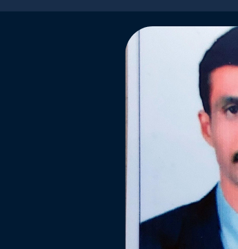
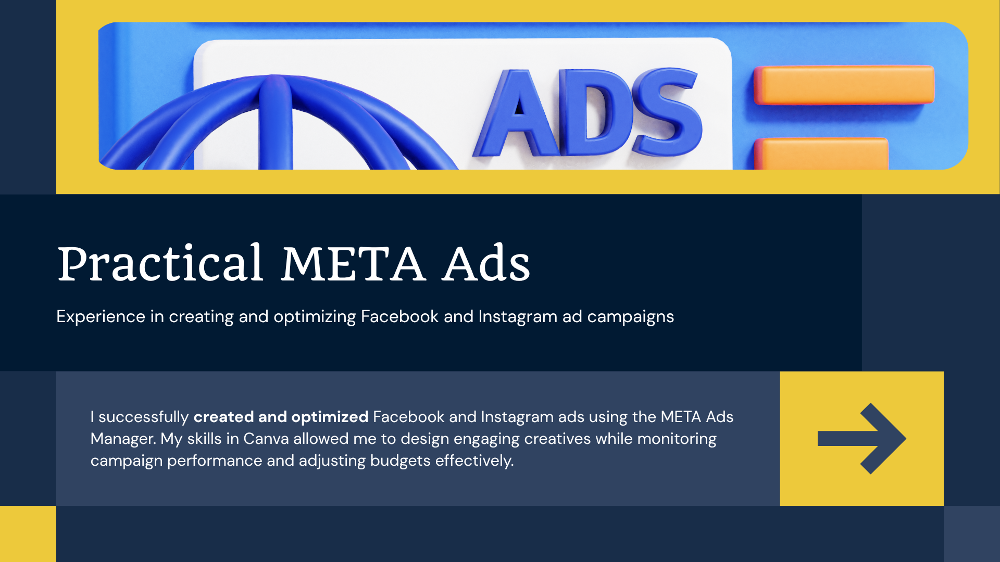
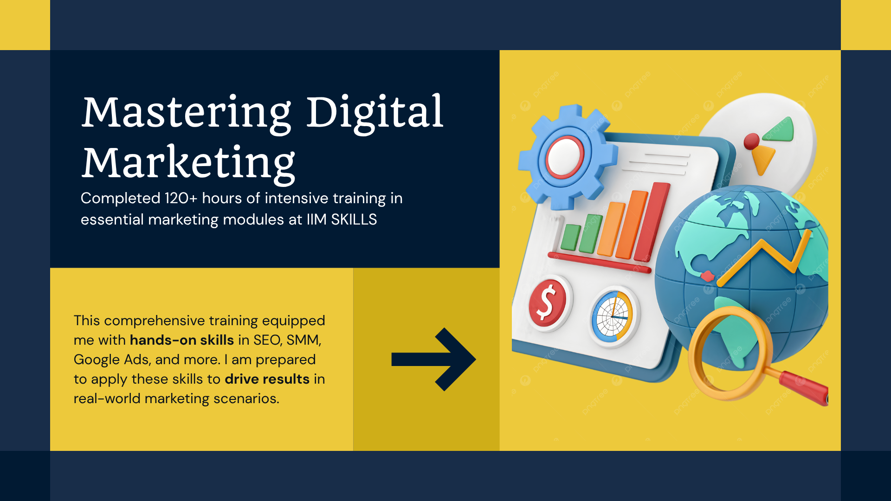
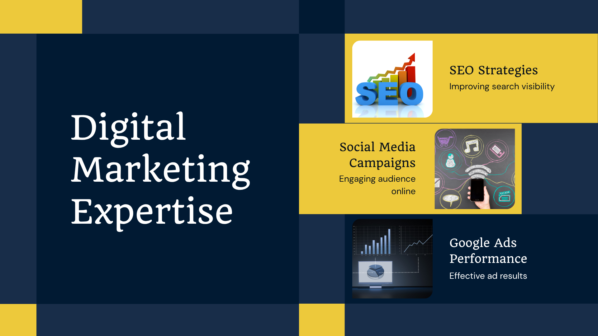
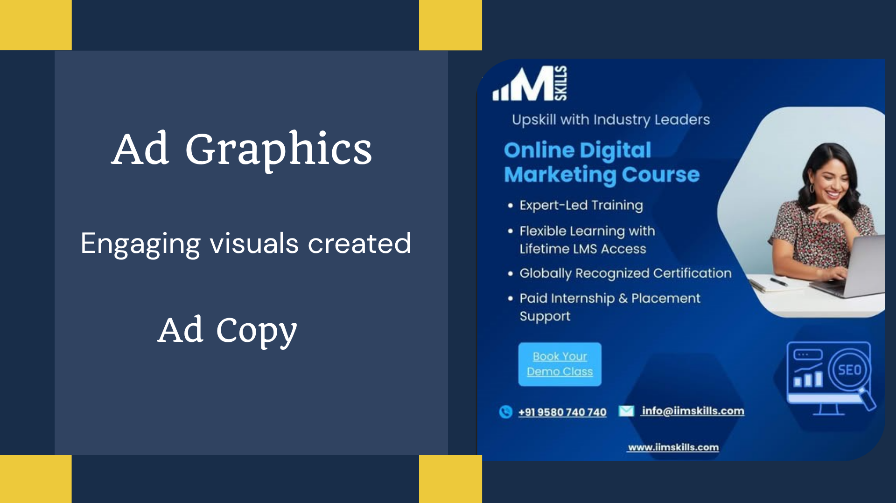
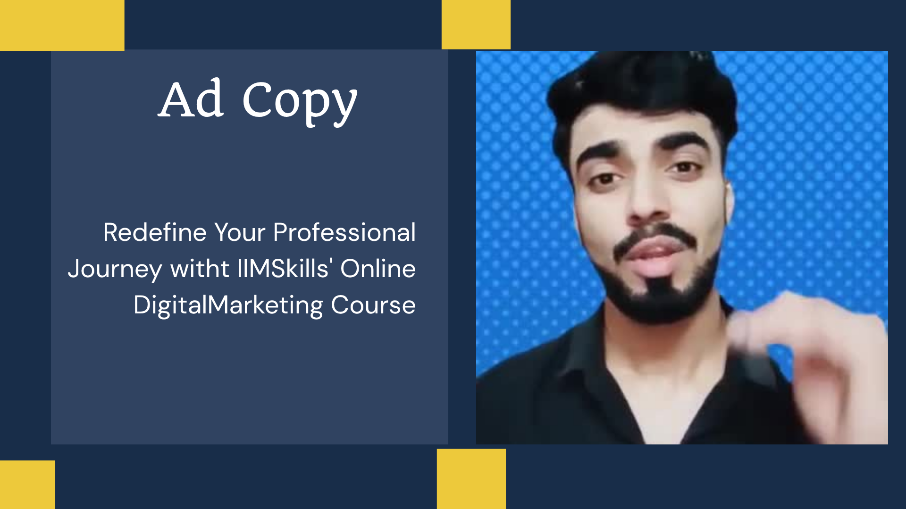
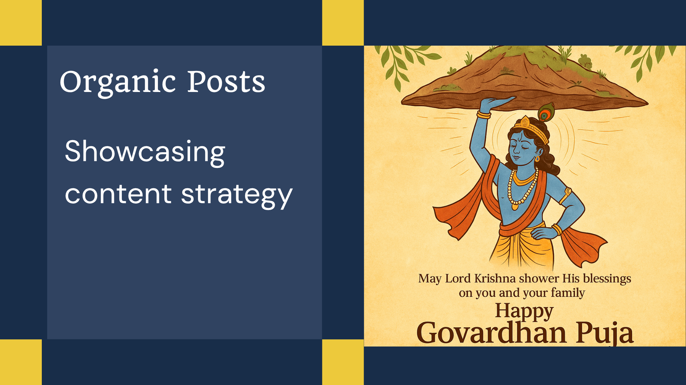
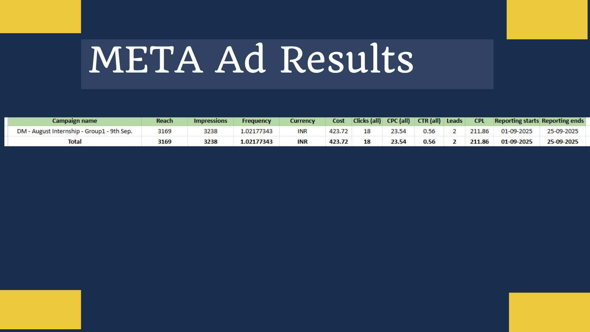
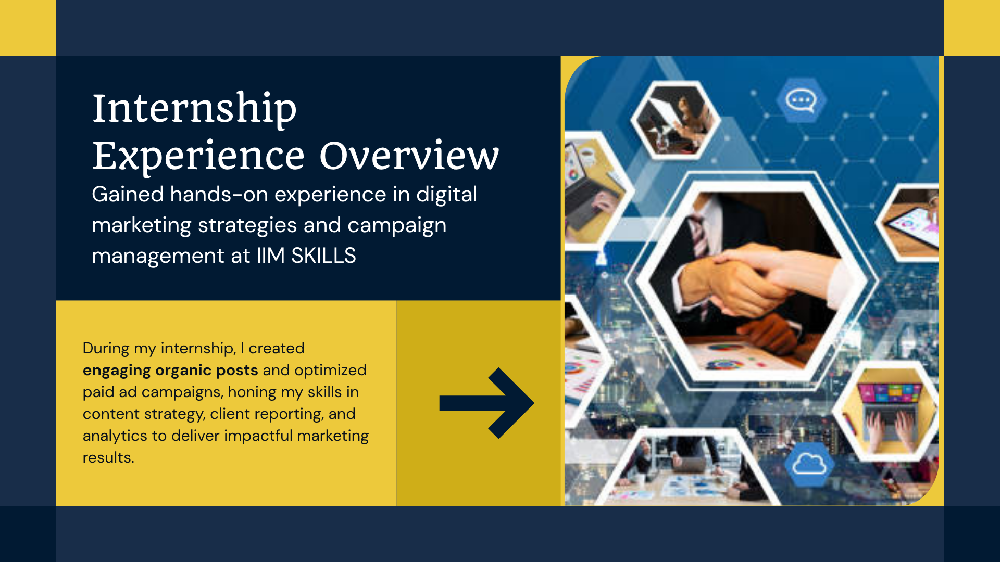
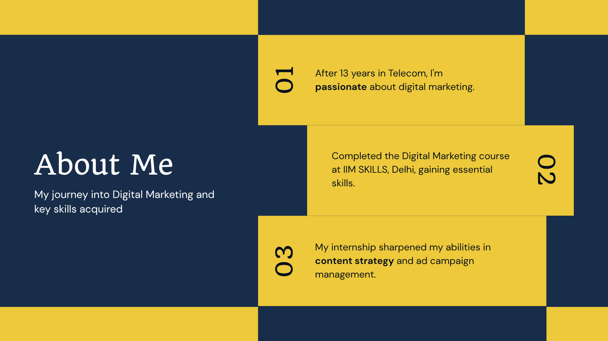

Telecom Sector
13+ YearsBuilt extensive professional experience in telecom, developing customer communication, problem-solving and business understanding.
DIGITAL MARKETING • PERFORMANCE • STRATEGY
I'm Kamalakarchary P, a Digital Marketing Professional with 16+ years of overall experience: 13+ years in Telecom, 3.6 years as a Business Development Associate at Citrina Software Solutions Pvt. Ltd., and 3 months of focused Digital Marketing experience.

01 — ABOUT ME
After 13+ years in the Telecom sector, I moved into Business Development and worked for 3.6 years as a Business Development Associate at Citrina Software Solutions Pvt. Ltd. I then transitioned into Digital Marketing, building practical experience through internships and campaign projects.
I completed 120+ hours of intensive Digital Marketing training at IIM SKILLS, Delhi. My 3-month Digital Marketing experience includes a 1-month Social Media Marketing internship, a 1-month Social Media Management internship, and 1 month of hands-on experience across digital marketing campaigns.
My advantage is the combination of long professional experience, business understanding, client-facing skills and focused practical Digital Marketing experience.
02 — CAREER PROGRESSION
Built extensive professional experience in telecom, developing customer communication, problem-solving and business understanding.
Developed experience in business development, client communication, relationship management and understanding customer requirements.
1-month Social Media Marketing internship, 1-month Social Media Management internship and 1 month of hands-on experience across digital marketing campaigns.
02 — EXPERTISE
Keyword optimization, search visibility and technical SEO best practices.
Facebook and Instagram campaigns, creative testing, budget monitoring and optimization.
SEM campaign planning, keyword research, ad groups, targeting and KPI optimization.
Engaging organic content across Facebook, Instagram, LinkedIn and other platforms.
Ad copy, campaign messaging, organic posts and content planning.
Campaign KPI monitoring, reporting and data-informed optimization.
03 — PROJECTS

Created and optimized paid social campaigns using Meta Ads Manager. Designed creatives in Canva, monitored performance and adjusted budgets based on campaign data.

Planned and set up a practical Google Search Ads campaign for a men’s health supplement offer, focusing on search intent, keyword targeting, responsive search ads, location targeting, ad assets and campaign optimization.
GOOGLE ADS CAMPAIGN EVIDENCE
Selected screenshots from the Google Ads campaign setup, targeting, keywords, ad copy, assets and performance views.
.png)
.png)
.png)
.png)
.png)
.png)
.png)
.png)
.png)
.png)
.png)
.png)
.png)

Strategic campaign concept focused on increasing brand visibility and engagement among urban youth aged 16–30 through emotional storytelling.
05 — DIGITAL MARKETING EXPERIENCE
My Digital Marketing experience includes a 1-month Social Media Marketing internship, a 1-month Social Media Management internship and 1 month of hands-on experience across digital marketing campaigns.
04 — INTERNSHIP
During my Digital Marketing experience, I worked on organic content, social media activities, paid advertising, campaign analytics, reporting and creative development.
05 — CREATIVE WORK
Selected creative examples from my portfolio. Replace or add assets anytime as your work grows.






06 — CERTIFICATION
IIM SKILLS, Delhi
Completed 120+ hours of intensive training across SEO, Social Media Marketing, Google Ads, Content Strategy and Analytics.
07 — CONTACT
I'm open to Digital Marketing, Performance Marketing and related opportunities where I can combine my professional experience with practical digital skills.